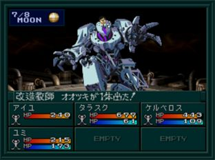

공략
분노계 클리어 후 링을 사용하면 오오츠키와 하자마의 전투가 시작된다. 보스전을 제외하고는 특별한 일은 없다.오오츠키를 쓰러뜨린 다음 NO를 선택해서 다시 재정비를 한 뒤에 하자마에게 도전하자.
BOSS:개조교사 오오츠키3
| 이름 | Lv65 改造教師オオツキ |
|---|---|
| HP | 1965 |
| 마법/특기 | バルカンキック／達磨返し／ハンマーパンチ／散弾撃ち |
물리 공격이 강한 편이지만 쉬운 보스이다.
BOSS:마신황 하자마

유미, 찰리, 아키라 루트의 최종 보스
| 이름 | Lv80 魔神皇ハザマ |
|---|---|
| HP | 20000 |
| 마법/특기 | マハラギダイン／マハブフダイン／マカラカーン／アカシャアーツ／菩薩掌／ソウルスマッシュ／ランダマイザ |
| 유효 | 검, 총, 검(악마), 공격(악마), 기술(악마), 화염, 충격, 만능 |
| 무효 | 돌격(악마), 빙결, 전격, 신경, 마력, 속박 |
| 반사 | 파마, 주살 |
| 추천 파티 구성 | |
|---|---|
| 전열 | 공격력이 높고, 공격 회수가 많은 캐릭터 |
| 후열 | 캬쟈계, 운다계 마법을 사용하는 캐릭터 데쿤다를 사용하는 캐릭터 회복 마법을 사용하는 캐릭터 |
- 하자마의 기술 중 란다마이자(ランダマイザ)는 아군의 공격력, 방어력, 명중률을 내리는 마법으로 파트너나 중마가 데쿤다(デクンダ)를 습득하고 있으면 무효화 할 수 있어서 좋다.
- 카지노 또는 분노계 CB에서 얻을 수 있는 라스터캔디(ラスタキャンディ)를 적극 사용해서 아군을 버프 시키고, 하자마는 데쿤다를 사용하지 않기 때문에 운다계(라쿤다) 마법으로 디버프를 걸어주자.